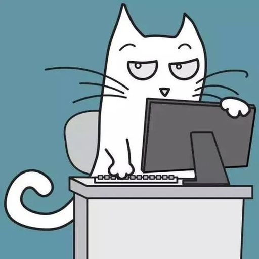
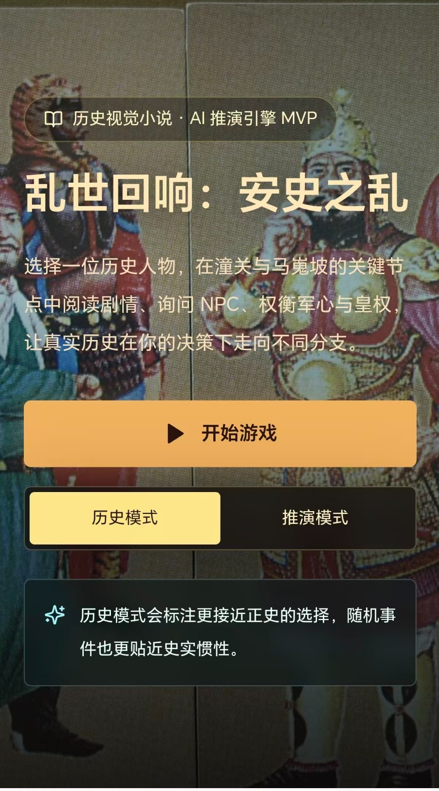
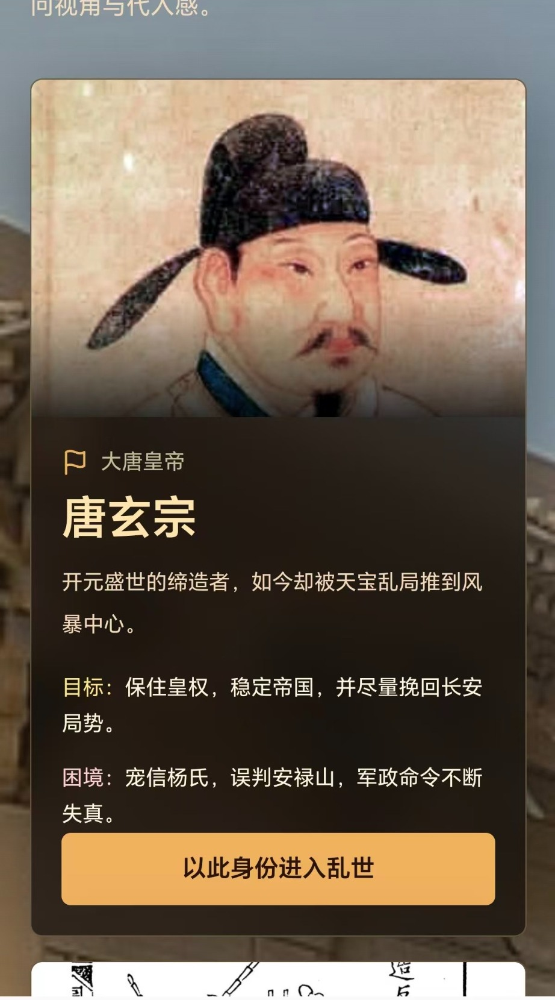
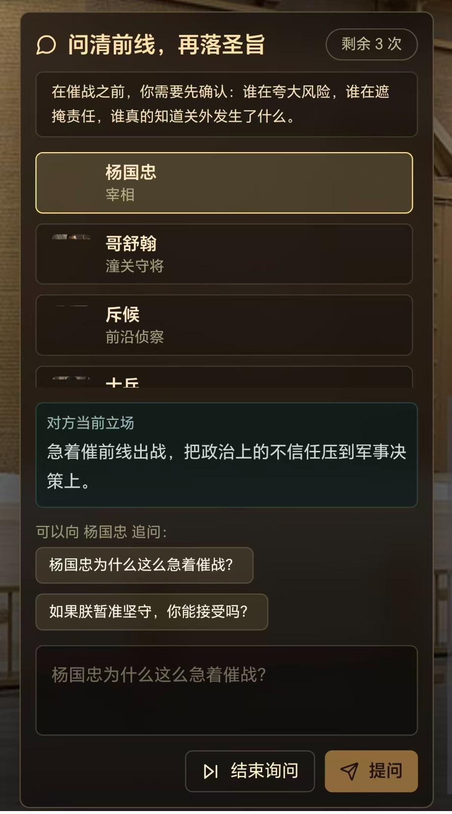
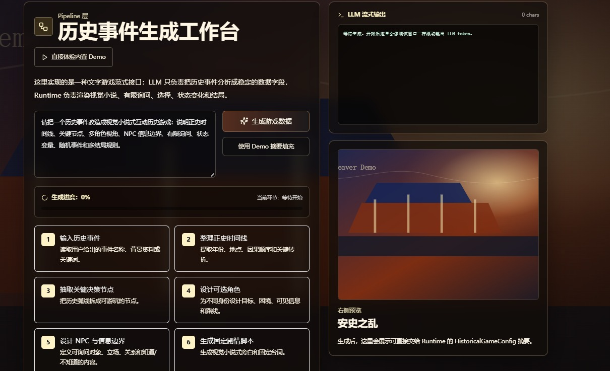

史境
HistWeaver
让历史不再只是被讲述，而是可以被进入、被对话、被选择、被重新理解。
我们用 AI 把历史事件转化为可玩的互动视觉小说，让用户以历史人物身份进入现场，与不同立场的角色对话，在有限信息中做选择，并走向正史或合理的非正史结局。

Created by CoderCat历史被展示了，
但很少被真正“进入”
单向讲解
展板和讲解能告诉用户发生了什么，却很难让用户进入人物处境。
人物标签化
历史人物常被压缩成结论，真实选择中的恐惧、误判和无奈被消解。
互动太浅
很多文旅互动停留在问答、打卡和解谜，缺少真正的历史推演。
把历史事件变成
可玩的决策现场
史境不是单个历史小游戏，而是一套历史互动叙事生成流水线。
它把一个历史事件拆解为正史时间线、关键节点、可选角色、人物立场、剧情脚本、AI 对话、决策分支、状态变量和多结局规则。
输入历史事件
安史之乱、赤壁之战、玄武门之变、靖康之变、戊戌变法……
输出互动游戏
带背景图、对话框、有限询问、关键选择和多结局的视觉小说体验。
从历史事件到互动游戏，
只需要一套结构化流水线
玩家不是旁观者，
而是局中人
选择角色
以不同历史人物身份进入事件。
阅读局势
理解地点、时间、矛盾和压力。
有限询问
在关键决策前向 NPC 提问。
做出选择
在不完整信息下承担后果。
示例 Demo：安史之乱
安史之乱只是第一个样例，用来展示流水线如何把历史事件转化为互动视觉小说。

游戏首页
用户进入安史之乱场景，选择模式并开始体验。

角色选择
不同历史人物拥有不同目标、处境和信息边界。

决策前询问
玩家向不同立场角色提问，再做出关键选择。

历史事件生成工作台
从历史事件输入到结构化生成，服务更多文旅和教育场景。
商业价值：从一次性讲解，
变成可复用互动产品
博物馆、历史文化景区、研学机构、学校历史教育、地方文旅 IP 项目。
网页 H5、展厅互动屏、文旅小程序、研学课程任务、地方历史互动故事。
短期 B 端定制交付；中期工作台 SaaS；长期沉淀历史互动内容平台。
比普通导览更有参与感，比历史问答更有游戏性，比单个定制游戏更容易复用。
技术架构：Config 驱动的历史游戏运行器
时间线、人物、节点、术语、资料。
HistoricalGameConfig、角色路线、剧情脚本、决策规则。
NPC Prompt、信息边界、有限自由询问、Mock 兜底。
背景图、对话框、状态面板、选择分支、多结局展示。